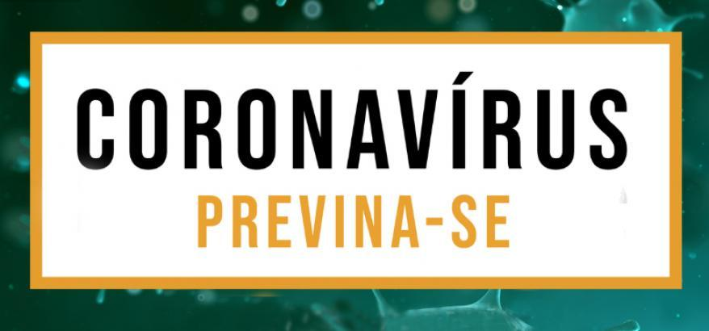

O ideal é ficar em casa, porém, se for necessário a saída para a rau, com ir ao banco por exemplo, durante a saída considere que suas mãos estão contaminadas, e nunca toque a boca, o nariz ou os olhos. Mantenha uma distância de 1,5 m a 2 m de uma pessoa para a outra, principalmente em filas, evite ao máximo conversar e mantenha-se de máscara , lave as mãos ou use álcool em gel assim que finalizar seus afazeres na rua.
 - Lavar as mãos com água e sabão.
- Não tocar no rosto.
- Manter a distância segura.
- Usar o cotovelo para cobrir a boca ao tossir.
- Use máscara.
- Tocar os olhos, nariz ou boca sem estar com as mãos limpas.
- Permanecer em locais com aglomeração de pessoas.
- Ter contator físico caso estiver doente.
- tocar na máscara durante o uso.